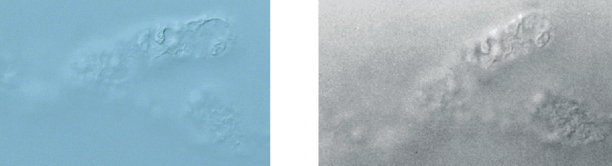
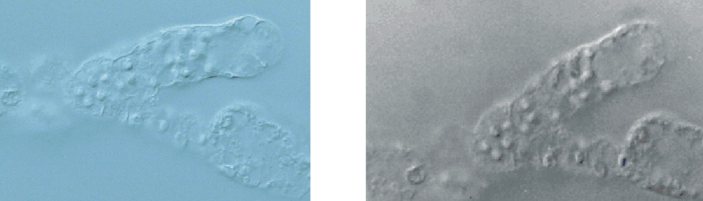
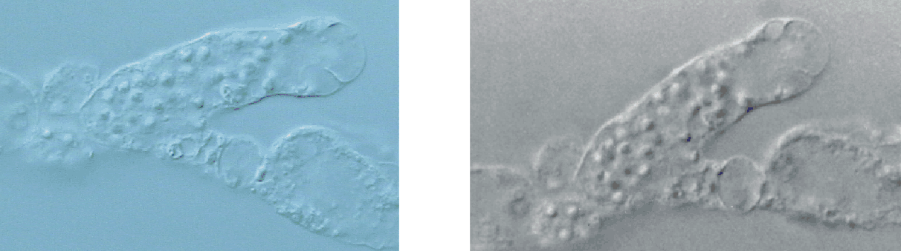

Paul De Ley & Wim Bert - December
20th 2001
Video Capture and Editing: Figure
4
Summary
Introduction
Material and Methods
Results
Discussion
Applications
Conclusions
References
Glossary
Comparison of image quality obtained with VCE (on left) and 35 mm
photography (on right) of the same spermatheca dissected from Coslenchus
sp.
at identical levels of focus (using configuration 1). Notice how the cellular
membranes (arrows) resolve differently with each method.





Back to top